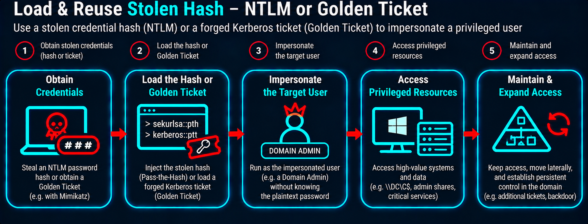

Load & Reuse Stolen Hash
This phase demonstrates how an attacker replays previously saved credential material in the authorized lab: a stored KRBTGT hash is forged into a Golden Ticket and injected with Pass-the-Ticket, or a stored NTLM hash is reused with Pass-the-Hash to impersonate a privileged user without knowing the plaintext password.
What this phase shows
Covers loading the stored KRBTGT (Golden Ticket) or NTLM (Pass-the-Hash) data from the AS2Go configuration, displaying the matching Mimikatz command, forging the Golden Ticket from the KRBTGT hash and passing it into memory, checking the freshly cached tickets with klist, or opening a new command window as the impersonated account with sekurlsa::pth.
Security lesson
Stolen hashes stay valid long after the original logon: an NTLM hash is enough to act as its user, and the KRBTGT key authenticates every Golden Ticket in the domain. Rotate compromised credentials, reset the KRBTGT password twice after domain compromise, protect LSASS with Credential Guard, and alert on anomalous Kerberos requests and NTLM logon patterns.